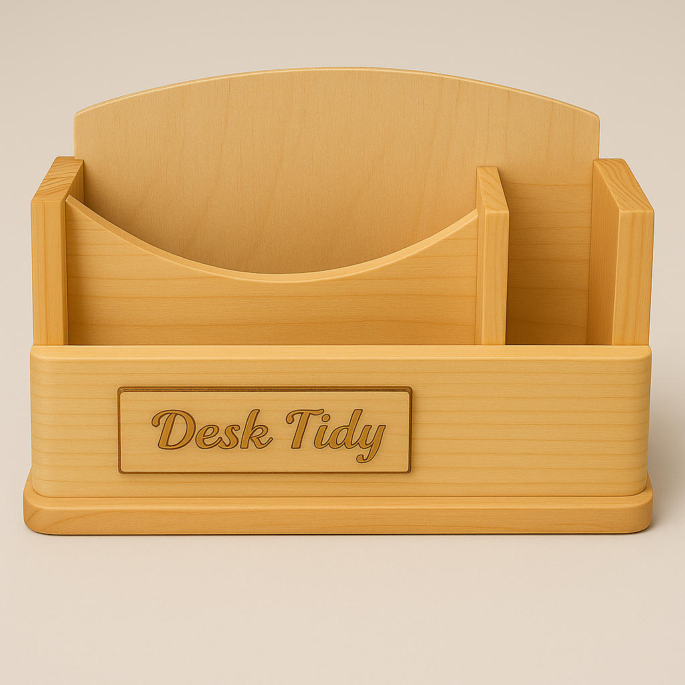

Learning pathway
Finish, test and evaluate
Read, check your understanding, apply the ideas to your project and save evidence.
- 1Clear finish
- 2Functional testing
- 3Evaluation and reflection
Student evidence
Your details
Autosave is on
A clear finish protects the timber and reveals the quality of the preparation beneath it.
Applying a clear finish safely and evenly

A finish is applied to protect the timber surface, improve its appearance and make the completed Desk Tidy easier to care for. The authorised unit uses one coat of water-based clear varnish. This finish does not hide poor preparation, so the quality of the final result depends on careful sanding, clean surfaces and controlled application.
Before finishing, inspect the entire product under good light. Look for scratches, rough areas, dents, glue residue, rounded edges or dust trapped in corners. Correct only the faults identified through teacher guidance, then remove dust using the approved workshop method. The surface should be clean, dry and ready before the container is opened.
Apply the varnish only after the teacher demonstration and in accordance with the product information. Use a controlled amount and work methodically so all approved surfaces are covered. Watch for runs on vertical faces, pooling in corners and joints, and missed areas around edges or internal sections. Do not repeatedly work over a section once the finish has begun to settle, as this may create an uneven surface.
After application, place the Desk Tidy in the teacher-approved location where it can remain protected from dust, contact and accidental movement. Drying and curing are related but different. Drying means the surface has lost enough moisture to feel dry, while curing means the finish has developed its full working strength. A surface that feels dry may still be too soft for handling or testing, so teacher and product instructions determine when the project may be moved.
Before functional testing, inspect the finish for even coverage, runs, pooling, missed areas, trapped dust or damage. Check that the product remains stable and that the finish has not interfered with any component relationship. Record the completed surface with clear photographs, then seek teacher approval before placing stationery, cables or paperclips into the organiser.
- Surface inspected and dust removed by the approved method.
- One coat of water-based clear varnish applied as demonstrated.
- Coverage checked for runs, pooling and missed areas.
- Work protected while drying and curing.
- Final result checked before functional testing.
Functional testing shows whether the finished Desk Tidy works as intended, not just whether it looks complete.
Functional testing against the design criteria
A fair test uses the same design criteria developed earlier in the project. The Desk Tidy should be tested with the intended stationery, such as pens, pencils, scissors and paperclips, rather than with unrelated objects. The test should be completed carefully and consistently so the results can be compared with the approved design brief and selected design.
Begin by checking storage capacity and access. Place the intended items into their planned compartments and observe whether they fit without crowding, falling over or becoming difficult to remove. Check whether commonly used items can be reached easily and whether the compartment layout supports the user’s needs. Also confirm that the organiser fits the intended desk space without creating unnecessary obstruction.
Stability and workmanship should be examined on a flat surface. Check whether the Desk Tidy sits steadily or rocks when items are added or removed. Inspect edges for roughness or damage, joints for gaps or movement, and components for alignment. Overall workmanship includes the accuracy, surface quality and care shown across the completed product.
Evidence is what can be observed, measured or shown in a photograph. Opinion is a personal judgement, such as saying the product “looks good”. A stronger evaluation explains that the organiser remained stable while holding the intended items, or that one compartment made scissors awkward to access. Record clear photographs and short notes that identify the test, observation and related criterion.
If testing reveals wobble, awkward access or an unsuitable compartment layout, diagnose the likely cause before suggesting an improvement. Do not force parts, alter the finished product or attempt an unapproved repair. Any adjustment must be discussed with and approved by the teacher.
| Test area | What to observe | Evidence to record |
|---|---|---|
| Storage and access | Fit, reach and compartment suitability | Photo and specific observation |
| Stability and desk fit | Rocking, balance and space used | Test note linked to criteria |
| Edges, joints and finish | Quality, alignment and visible faults | Close-up photo and diagnosis |
A strong evaluation explains what the evidence shows and what the designer learned.
Evaluation, presentation and reflection
Evaluation means judging the completed Desk Tidy against each design criterion developed earlier in the project. Use evidence from functional testing, observations, photographs and the approved drawings. Avoid vague statements such as “it worked well”. Explain what was tested, what happened and whether the result met the intended need for storage, access, stability, desk fit, appearance and workmanship.
A balanced evaluation identifies successful decisions as well as faults. A successful decision might involve a layout that keeps commonly used items easy to reach or a form that remains stable during use. Faults might include awkward access, uneven alignment, visible gaps or a surface that does not match the intended quality. Some faults may be improved with teacher approval, while others should be recorded honestly as limitations of the final product.
Students should also justify important material and process choices. Explain why the selected material suited the product, how the chosen joints or production methods supported the design, and whether those choices were realistic for the available time and skills. Sustainability should be discussed as a trade-off. Consider suitable stock selection, waste reduction, durability, repair, responsible material use and whether a different decision could have reduced environmental impact.
A short presentation should communicate the design journey clearly. Useful evidence may include early sketches, the selected concept, working drawings, process photographs, assembly checks, the finished product and functional test results. Arrange the evidence in a logical order and use brief explanations to show how the design changed and why decisions were made.
Reflection focuses on learning. Identify the most significant challenge, how it was approached and whether the response was effective. Explain which practical or design skills improved and what still needs development. Finish by describing one realistic change you would make next time, based on evidence rather than hindsight alone.
- Criterion: State what the design was meant to achieve.
- Evidence: Show the test result, observation or photograph.
- Judgement: Explain the success, fault or trade-off.
- Improvement: Identify an approved or future change.
- Reflection: Describe the learning and skill growth.
Guided practice
Weeks 9-10 knowledge checks
Use hints and feedback until you can explain each decision.
Apply your learning
Scaffolded written responses
Write first, use the guidance, then compare with the model.
Finish the two-week block
Save your evidence
Your work saves in this browser, but browser storage is not the official submission. Save this page as a PDF.
No marks, answers or personal information are sent from this webpage.